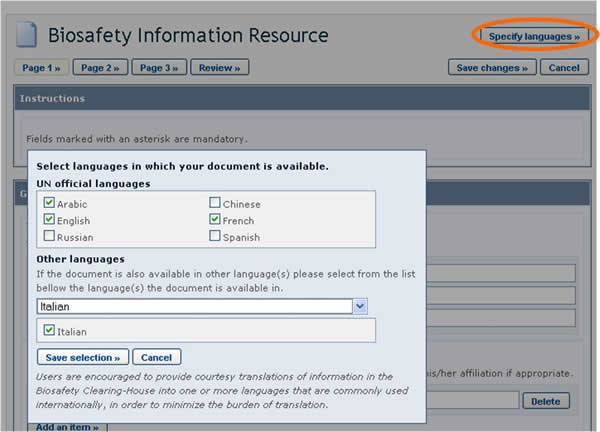
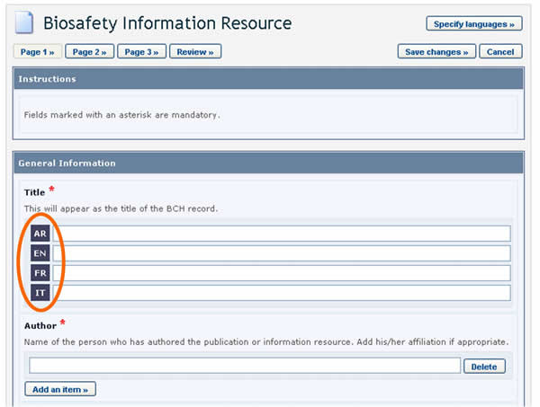
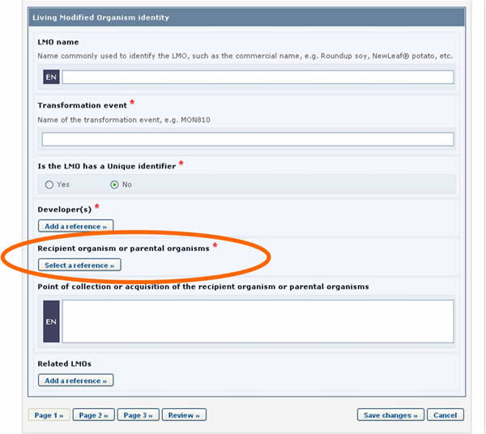

Todas las páginas de edición de documentos (a través del Centro de Gestión del CIISB) se basan en formatos comunes para la presentación de información. A continuación se presenta un ejemplo utilizando el formato común de Organismos Vivos Modificados.

Figura 14

Figura 15

Figura 16
Los componentes posibles de las páginas de los formatos comunes son:
-
Títulos de secciones: Los recuadros sombreados en azul claro describen el tipo de información que deberá ingresar en esta sección.
-
Nombres de campos: El texto en negrita es el nombre del campo en el que debe ingresan los datos.
-
Idioma: El recuadro azul marino al lado de cada campo de texto indica el idioma en el que está ingresando la información.
-
Campo de texto: En este campo se puede ingresar texto.
-
Selección de opciones excluyentes: Deberá hacer clic en la opción que usted desee, con la condición de que únicamente podrá seleccionar una de ellas.
-
Agregar:
-
Referencia: Este botón le permite vincular uno o más documentos del CIISB o crear un documento nuevo con la información requerida. Al hacer clic en el botón se abre una página con una lista de los documentos disponibles que puede vincular. Seleccione el documento correspondiente, haciendo clic sobre el mismo para vincularlo. Si no hay ningún documento que contenga la información que necesita, puede crear uno haciendo clic en el botón Create (crear). Aparecerá una segunda solapa en la pantalla donde podrá crear su nuevo documento. Cuando haya terminado de ingresar la información y haya guardado el nuevo documento, volverá a donde estaba trabajando con el documento original.
-
Página web: permite agregar un vínculo a un sitio web.
-
Archivo: permite adjuntar un archivo.
-
Item: permite agregar información adicional, por ejemplo más números de teléfono.
-
-
Casilleros de selección: Cuando se trata de listas cortas de vocabulario controlado, estas se presentan a veces con casilleros de selección (o checkboxes). Para agregar o seleccionar un término, haga clic en el casillero que aparece al lado del término deseado.
-
Otros términos: Si el término buscado no aparece en la lista de vocabulario controlado, deberá marcar el casillero correspondiente a otros (other). Seleccione el término que mejor describe el término nuevo (esto ayudará a buscar el registro que se está ingresando), o elegir nuevamente other si no hay ningún término relacionado. Luego ingrese el término nuevo y presione el botón Continue. Si no quiere crear un término nuevo, presione el botón de cancelar (Cancel).
-
Lista de vocabulario controlado: Al hacer clic en el botón se abre una lista de términos del vocabulario controlado, de donde debe seleccionar la opción que desea y presionar Continue. Si no quiere seleccionar nada ni cambiar su selección, puede presionar el botón de cancelar (Cancel).